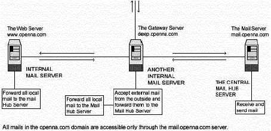

L
i n u x P a r
k
при
поддержке ВебКлуба |
Глава 15 Серверное программное обеспечение (Почтовый сервис) -
Sendmail (часть 1)В этой главе
Linux Sendmail
сервер
Конфигурации
Организация
защиты Sendmail
Утилиты
администратора Sendmail
Утилиты
пользователя Sendmail
Linux Imap и
Pop сервер
Конфигурации
Настройка Imap
и POP для использования с TCP-Wrappers inetd супер сервером
Организация
защиты IMAP/POP
|
 |
Linux Sendmail сервер
Краткий обзор.
Sendmail - это один из наиболее широко используемых Почтовых
Транспортных Агентов (MTA) в мире. Основное назначение MTA – это пересылка
почтовых сообщений с одной машины на другую. Sendmail не клиентская программа,
которую вы можете использовать для чтения вашей почты. Она перемещает вашу почту
через сети или Интернет туда, куда вы хотите ее отправить. Sendmail в прошлом
была легкой целью для хакеров, но с появлением Sendmail версии 8, использовать
ее для взлома стало значительно труднее.
Здесь мы представим вам две различные конфигурации Sendmail;
одна для центрального почтового концентратора, другая для локального или
граничного клиента и сервера.
Конфигурация центрального почтового концентратора будет
использована для серверов, в задачу которых входит отправка, получение и
перенаправление всех почтовых сообщений со всех локальных и граничных клиентов и
серверов вашей сети. Конфигурация для локальных или граничных клиентов и
серверов относится ко всем другим локальным серверам и клиентам вашей сети на
которых запущен Sendmail и которые отправляют исходящую почту на центральных
почтовых концентратор для ее дальнейшей доставки. Этот тип внутренних клиентов
никогда не посылают почту напрямую через Интернет; вместо этого вся почта из
Интернета для этих компьютеров хранится на центральном почтовом концентраторе.
Запуск одного центрального почтового концентратора для всех компьютеров вашей
сети является хорошей идеей; эта архитектура будет ограничивать задачу
управления на сервере и клиентских машинах и улучшит безопасность вашего
сайта.
Вы можете настроить граничный Sendmail так, чтобы он принимал
почту созданную только локально, такая изоляция граничной машины нужна для
удобства защиты. Шлюз (вне межсетевого защитного экрана или как часть его)
выступает как прокси и принимает внешние почтовые сообщения (через файл правил
защитного экрана), которые предназначены для внутренней доставки и
перенаправляет их на центральный почтовый концентратор. Также заметим, что Шлюз
настроен как граничный Sendmail сервер, чтобы никогда не принимать входящую
почту снаружи (из Интернет).

Это графическое представление конфигурации Sendmail, которую мы
используем в этой книге. Мы попытаемся показать вам различные установки
(Центральный почтовый концентратор и локальный или граничный клиенты и сервера)
на различных серверах. Существует много возможных решений в зависимости от ваших
нужд и сетевой архитектуры.
Эти инструкции предполагают.
Unix-совместимые
команды.
Путь к исходным кодам “/var/tmp” (возможны другие
варианты).
Инсталляция была проверена на Red Hat Linux 6.1 и 6.2.
Все шаги
инсталляции осуществляются суперпользователем “root”.
Sendmail версии
8.10.1
Пакеты.
Домашняя страница Sendmail: http://www.sendmail.org/
FTP сервер: 204.152.184.34
Вы должны
скачать: sendmail.8.10.1.tar.gz
Тарболы.
Хорошей идеей будет создать список файлов
установленных в вашей системе до инсталляции Sendmail и после, в результате, с
помощью утилиты diff вы сможете узнать какие файлы были установлены.
Например,
До инсталляции:
find /* >
Sendmail1
После инсталляции:
find /* >
Sendmail2
Для получения списка установленных файлов:
diff Sendmail1 Sendmail2 >
Sendmail-Installed
Раскроем тарбол (tar.gz).
[root@deep /]# cp sendmail.version.tar.gz /var/tmp
[root@deep /]# cd
/var/tmp
[root@deep tmp]# tar xzpf sendmail.version.tar.gz
Конфигурирование
Переместитесь в новый каталог
Sendmail и выполните следующее:
Редактируйте файл smrsh.c (vi +77
smrsh/smrsh.c) и измените строку:
# define CMDDIR
"/usr/adm/sm.bin"
Должна читаться:
#
define CMDDIR "/etc/smrsh"
Эта модификация задает поисковый путь по
умолчанию для команд, запускающих программу “smrsh”. Это позволяет нам
ограничивать место, где эти программы расположены.
Компиляция и оптимизация
Скрипт Build из Sendmail использует конфигурационных файл сайта
в котором определяются тип операционной системы и различные флаги компиляции.
Этот файл находится в каталоге “devtools/OS” и если вы запускаетесь на Linux, то
он имеет имя “Linux”. Мы пересоздадим этот конфигурационный файл сайта для
соответствия его вашей системе и поместим в каталог “devtools/OS” дерева
исходных кодов Sendmail, так как скрипт Build будет в процессе компиляции искать
конфигурационный файл по умолчанию именно в этом месте.
Переместитесь в новый каталог Sendmail и редактируйте файл
Linux (vi devtools/OS/Linux), удалив в нем все предопределенные строки и добавив
следующие новые:
define(`confENVDEF',
`-DPICKY_QF_NAME_CHECK -DXDEBUG=0')
define(`confCC',
`egcs')
define(`confOPTIMIZE', `-O9 -funroll-loops -mcpu=pentiumpro
-march=pentiumpro -fomit-frame-pointer -fno-exceptions')
define(`confLIBS',
`-lnsl')
define(`confLDOPTS', `-s')
define(`confMANROOT',
`/usr/man/man')
define(`confMANOWN', `root')
define(`confMANGRP',
`root')
define(`confMANMODE', `644')
define(`confMAN1SRC',
`1')
define(`confMAN5SRC', `5')
define(`confMAN8SRC',
`8')
define(`confDEPEND_TYPE',
`CC-M')
define(`confNO_HELPFILE_INSTALL’)
define(`confSBINGRP',
`root')
define(`confSBINMODE', `6755')
define(`confUBINOWN',
`root')
define(`confUBINGRP', `root')
define(`confEBINDIR',
`/usr/sbin')
где опции обозначают следующее:
define(`confENVDEF', `-DPICKY_QF_NAME_CHECK
-DXDEBUG=0')
Это макро опция первично использовалась для определения
кода, который должен быть включен или исключен. С “-DPICKY_QF_NAME_CHECK“,
Sendmail будет фиксировать ошибку, если файл “qf” сформирован некорректно и
будет переименовывать файл “qf” в “Qf”. Аргумент “-DXDEBUG=0 “ отключает шаги
дополнительных внутренних проверок в течении компиляции.
define(`confCC', `egcs')
Эта макро опция определяет
компилятор C используемый при компиляции Sendmail. В нашем случае мы используем
C компилятор “egcs” для лучшей оптимизации.
define(`confOPTIMIZE', `-O9 -funroll-loops -mcpu=pentiumpro
-march=pentiumpro -fomit-frame-pointer -fno-exceptions')
Эта макро опция
определяет флаги используемые для оптимизации под вашу CPU архитектуру.
define(`confLIBS', `-lnsl')
Эта макро опция
определяет флаг -l передаваемый ld.
define(`confLDOPTS', `-s')
Эта макро опция определяет
опции компоновщика передаваемые ld.
define(`confMANROOT', `/usr/man/man')
Эта макро опция
определяет место, куда надо инсталлировать страницы руководства (man)
Sendmail.
define(`confMANOWN', `root')
Эта макро опция
определяет владельца всех проинсталлированных страниц руководства Sendmail.
define(`confMANGRP', `root')
Эта макро опция
определяет группу для всех проинсталлированных страниц руководства Sendmail.
define(`confMANMODE', `644')
Эта макро опция
определяет режим доступа для всех проинсталлированных страниц руководства
Sendmail.
define(`confMAN1SRC', `1')
Эта макро опция определяет
источник для страниц руководств устанавливаемых в confMAN1.
define(`confMAN5SRC', `5')
Эта макро опция определяет
источник для страниц руководств устанавливаемых в confMAN5.
define(`confMAN8SRC', `8')
Эта макро опция определяет
источник для страниц руководств устанавливаемых в confMAN8.
define(`confDEPEND_TYPE', `CC-M')
Эта макро опция
определяет как создавать зависимости с Sendmail.
define(`confNO_HELPFILE_INSTALL’)
Эта макро опция
говорит, что не надо инсталлировать файл помощи Sendmail по умолчанию. Некоторые
опытные администраторы рекомендуют сделать это для большей безопасности.
define(`confSBINGRP', `root')
Эта макро опция
определяет группу для всех исполняемых файлов со сменой идентификатора (setuid)
Sendmail.
define(`confSBINMODE', `6755')
Эта макро опция
определяет режим доступа для всех исполняемых файлов со сменой идентификатора
(setuid) Sendmail.
define(`confUBINOWN', `root')
Эта макро опция
определяет владельца всех исполняемых файлов Sendmail.
define(`confUBINGRP', `root')
Эта макро опция
определяет группу всех исполняемых файлов Sendmail.
define(`confEBINDIR', `/usr/sbin')
Эта макро опция
определяет куда должны быть установлены двоичные исполняемые файлы исполняемые
из других двоичных файлов. В Red Hat Linux этот путь должен быть определен как
“/usr/sbin”.
Шаг 2
Сейчас мы должны скомпилировать и
проинсталлировать Sendmail на нашем сервере:
[root@deep sendmail-8.10.1]# cd sendmail
[root@deep sendmail]# sh
Build
[root@deep sendmail]# sh Build install
[root@deep sendmail]# cd
..
[root@deep sendmail-8.10.1]# cd mailstats
[root@deep mailstats]# sh
Build install
[root@deep mailstats]# cd ..
[root@deep sendmail-8.10.1]# cd
smrsh
[root@deep smrsh]# sh Build install
[root@deep smrsh]# cd
..
[root@deep sendmail-8.10.1]# cd makemap (Требуется только для
конфигурации Почтового концентратора)
[root@deep
makemap]# sh Build install (Требуется только для конфигурации Почтового
концентратора)
[root@deep makemap]# cd
..
[root@deep sendmail-8.10.1]# cd praliases (Требуется только для
конфигурации Почтового концентратора)
[root@deep
makemap]# sh Build install (Требуется только для конфигурации Почтового
концентратора)
[root@deep makemap]# cd
..
[root@deep sendmail-8.10.1]# ln -fs /usr/sbin/sendmail
/usr/lib/sendmail
[root@deep sendmail-8.10.1]# chmod 511
/usr/sbin/smrsh
[root@deep sendmail-8.10.1]# install -d -m 755
/var/spool/mqueue
[root@deep sendmail-8.10.1]# chown root.mail
/var/spool/mqueue
[root@deep sendmail-8.10.1]# mkdir /etc/smrsh
Команда “sh Build” собирает и создает необходимые зависимости
для различных двоичных файлов требуемых Sendmail до инсталляции на вашу
систему.
Команда “sh Build install” инсталлирует исполняемые двоичные
файлы sendmail, mailstats, makemap, praliases, smrsh и страницы руководства,
ечли это было задано перед компиляцией.
Команда “ln -fs” создает символическую ссылку исполняемого
файла sendmail в каталоге “/usr/lib”. Это требуется, так как некоторые программы
пытаются искать sendmail в этом каталоге (/usr/lib).
Команда “install” создаст каталог “mqueue” с правами 755 в
каталоге “/var/spool”. Почтовые сообщения по разным причинам могут быть сразу не
доставлены. Чтобы гарантировать их доставку, Sendmail запоминает их в каталоге
“mqueue” пока они не будут отправлены.
Команда “chown” устанавливает UID “root” и GID “mail” для
каталога “mqueue”.
Команда “mkdir” будет создавать каталог “/etc/smrsh”. Здесь
будут лежать все программы-почтальоны, которые мы разрешим запускать
Sendmail.
ЗАМЕЧАНИЕ. Программы “makemap” и “praliases” должны быть
установлены только на центральном почтовом концентраторе. “makemap” позволяет
вам создавать базы данных соответствий наподобии файлам “/etc/mail/aliases.db”
или “/etc/mail/access.db”. “praliases” выводит системные почтовые псевдонимы
(содержимое файла /etc/mail/aliases). Так как лучше иметь только одно место
(подобное центральному почтовому концентратору) для обработки и управления всеми
db файлами в вашей сети, то нет необходимости использовать программы “makemap” и
“praliases” и создавать db файлы на других компьютерах сети.
Все программное обеспечение, описанное в книге, имеет
определенный каталог и подкаталог в архиве “floppy.tgz”, включающей все
конфигурационные файлы для всех программ. Если вы скачаете этот файл, то вам не
нужно будет вручную воспроизводить файлы из книги, чтобы создать свои файлы
конфигурации.
Скопируйте файлы связанные с Sendmail из архива, измените их
под свои требования и поместите в нужное место так, как это описано ниже. Файл с
конфигурациями вы можете скачать с адреса: http://www.openna.com/books/floppy.tgz
Для запуска центрального почтового концентратора нужны
следующие файлы. Создайте или скопируйте их в требуемые каталоги на вашем
сервере.
Копируйте файл sendmail в каталог
“/etc/sysconfig”.
Копируйте скрипт sendmail в каталог
“/etc/rc.d/init.d/”.
Копируйте файл local-host-names в каталог
“/etc/mail”.
Копируйте файл access в каталог “/etc/mail”.
Копируйте файл
aliases в каталог “/etc/mail”.
Создайте файлы virtusertable, domaintable,
mailertable и .db в каталоге “/etc/mail” directory.
Для запуска локального или граничного клиента или сервера
требуются следующие файлы. Создайте или скопируйте их в требуемые каталоги на
вашем сервере.
Копируйте файл sendmail в каталог
“/etc/sysconfig”.
Копируйте скрипт sendmail в каталог
“/etc/rc.d/init.d/”.
Копируйте файл local-host-names в каталог
“/etc/mail”.
Файл “/etc/sendmail.mc” для центрального почтового концентратора
Вместо того, чтобы иметь индивидуальные сервера или рабочие
станции обрабатывающие свою почту, намного выгоднее иметь в сети единый мощный
центральный сервер, который обрабатывает всю почту. Такой сервер называется
Почтовый концентратором. Преимущества Центрального Почтового Концентратора:
- Вся входящая почта отправляется на концентратор, никогда почта не
отправляется клиенту напрямую.
- Вся исходящая почта от клиентов отправляется на концентратор, и уже он
отправляет ее по назначению.
- Вся исходящая почта поступает от одного сервера, поэтому во внешнем мире
не требуется знать имена клиентских машин.
- Клиенту не надо запускать демон sendmail для получения почты.
Файл “sendmail.cf” первым считывается Sendmail при запуске и
является одним из самых важных файлов для него. В нем определяются
месторасположения остальных файлов, права доступа к файлам и каталогам нужных
Sendmail. Макро препроцессор m4 из Linux используется Sendmail V8 для создания
конфигурационного файла.
Он будет создавать конфигурационный файл
“/etc/mail/sendmail.cf”, обрабатывая файл имя которого заканчивается на “.mc”.
Мы создадим файл (sendmail.mc) и внесем в него необходимые
макро значения, которые препроцессор m4 прочитает, соберет определения макросов
и затем, заменит эти макросы их значениями, создавая в результате своей работы
файл “sendmail.cf”. Пожалуйста, обратитесь к документации Sendmail и файлу
README из каталога “cf” дерева исходных фалов Sendmail V8 для получения большей
информации.
Шаг 1
Создайте файл sendmail.mc (touch
/var/tmp/sendmail-version/cf/cf/sendmail.mc) и добавьте в него следующие
строки:
define(`confDEF_USER_ID',``8:12'')dnl
OSTYPE(`linux')dnl
DOMAIN(`generic’)dnl
define(`confTRY_NULL_MX_LIST',true)dnl
define(`confDONT_PROBE_INTERFACES',true)dnl
define(`PROCMAIL_MAILER_PATH',`/usr/bin/procmail')dnl
define(`LOCAL_MAILER_FLAGS',
`ShPfn')dnl
define(`LOCAL_MAILER_ARGS', `procmail -a $h -d
$u')dnl
FEATURE(`smrsh',`/usr/sbin/smrsh')dnl
FEATURE(`mailertable’)dnl
FEATURE(`virtusertable',`hash
-o
/etc/mail/virtusertable')dnl
FEATURE(`redirect’)dnl
FEATURE(`always_add_domain’)dnl
FEATURE(`use_cw_file’)dnl
FEATURE(`local_procmail’)dnl
FEATURE(`access_db')dnl
FEATURE(`blacklist_recipients')dnl
FEATURE(`dnsbl')dnl
MAILER(`local’)dnl
MAILER(`smtp’)dnl
MAILER(`procmail’)dnl
Где:
define(`confDEF_USER_ID',``8:12'')dnl
Эта
конфигурационная опция определяет id пользователя по умолчанию. В нашем случае
пользователь “mail” и группа “mail”, которые отвечают следующим идентификатор
“8:12” (смотрите /etc/passwd и /etc/group file).
OSTYPE(`linux’)dnl
Эта конфигурационная опция задает
операционную систему под которой будет запускаться Sendmail; в нашем случае это
“linux”. Этот элемент является минимально необходимым для “mc” файла.
DOMAIN(`generic’)dnl Эта конфигурационная опция
будет определять и описывать домен соответствующий вашему окружению.
define(`confTRY_NULL_MX_LIST',true)dnl
Эта
конфигурационная опция определяет, является ли принимающий сервер лучшим MX для
хоста, и если это так, то соединяется с ним напрямую.
define(`confDONT_PROBE_INTERFACES',true)dnl
Эта
конфигурационная опция, если она установлена в true, говорит Sendmail не
вставлять имена и адреса любых локальных интерфейсов в класс $=w (список
известных “эквивалентных” адресов).
define(`PROCMAIL_MAILER_PATH',`/usr/bin/procmail')dnl
Эта
опция определяет путь к программе procmail, инсталлированной на вашей системе.
Так как в Red Hat Linux он отличается от других Linux версий, мы должны
определить новый путь в этом макросе. Важно заметить, что этот макрос также
используется в FEATURE(`local_procmail’), как будет определено позже в этом
файле.
define(`LOCAL_MAILER_FLAGS', `ShPfn')dnl
Эта
конфигурационная опция определяет флаги, которые должны быть использованы
локальным агентом доставки (procmail). Смотрите документацию Sendmail для
получения большей информации о них.
define(`LOCAL_MAILER_ARGS', `procmail -a $h -d
$u')dnl
Эти конфигурационные опции определяют аргументы которые должны
быть переданы локальному агенту доставки (procmail). Смотрите документацию
Sendmail для получения информации о них.
FEATURE(`smrsh',`/usr/sbin/smrsh')dnl
Этот m4
макроопределение включает использование “smrsh” (ограниченная оболочка sendmail)
вместо “/bin/sh”, используемого по умолчанию) для почтовых программ. При помощи
этой опции вы можете контролировать какие программы могут запускаться через
электронную почту через файлы “/etc/mail/aliases” и “~/.forward”. По умолчанию
программа “smrsh” находится в “/usr/libexec/smrsh”; так как мы проинсталлировали
“smrsh” в другое место, нам нужно добавить аргумент smrsh, указывающий новое
месторасположение “/usr/sbin/smrsh”. Использование “smrsh” рекомендовано CERT,
так что вы должны поддерживать использование этой возможности так часто, как
возможно.
FEATURE(`mailertable’)dnl
Это макроопределение m4
включает возможность использования “mailertable” (базы данных выбора нового
агента доставки). mailertable – это база данных которая связывает имена
“host.domain” со специальными агентами доставки. Благодаря этой возможности,
почта может доставляться специфическими агентами доставки к новым доменным
именам. Обычно, эта возможность используется только на Центральном Почтовом
концентраторе.
FEATURE(`virtusertable',`hash -o
/etc/mail/virtusertable')dnl
Это макроопределение m4 включает
использование “virtusertable” (поддержка виртуальных доменов), которая позволяет
на одной машине размещать много виртуальных доменов. virtusertable – это база
данных, которая связывает виртуальные домены с новыми адресами. Благодаря
использованию этой возможности, почта для виртуальных почтовых доменов может
быть доставлена на локальные, удаленные или единичные адреса пользователей.
Обычно, эта возможность используется только на Центральном Почтовом
Концентраторе.
FEATURE(`redirect’)dnl
Это макроопределение m4
включает использование “redirect” (поддержка для address.REDIRECT). С этой
возможностью, почтовый адрес удаленного бюджета, например, “wahib”, будет
отражаться с информацией о новом адресе. Удаленный бюджет должен быть определен
в файле псевдонимов на почтовом сервере. Обычно, эта возможность используется
только на Центральном Почтовом Концентраторе.
FEATURE(`always_add_domain’)dnl
Это макроопределение
m4 включает использование “always_add_domain” (добавлять локальный домен в
локальной почте). Благодаря этой возможности, все локально доставляемые адреса
будут полностью квалифицированными.
FEATURE(`use_cw_file’)dnl
Это макроопределение m4
включает использование “use_cw_file” (использование файла
/etc/mail/local-host-names для локальных имен компьютеров). Используя эту
возможность вы можете объявить список хостов в файле
“/etc/mail/local-host-names” для которых локальных хост выступает MX
получателем. Другими словами файл “/etc/mail/local-host-names” будет содержать
альтернативные имена локального компьютера.
FEATURE(`local_procmail’)dnl
Это макроопределение m4
включает использование “local_procmail” (использовать procmail, как локальный
агент доставки). Благодаря этой функции вы можете использовать procmail, как
агент доставки Sendmail.
FEATURE(`access_db')dnl
Это макроопределение m4
включает использование базы данных доступа. Благодаря этой функции, вы можете в
базе данных access разрешать или запрещать прием почты из определенных доменов.
Обычно, эта возможность используется только на Центральном Почтовом
Концентраторе.
FEATURE(`blacklist_recipients')dnl
Это
макроопределение m4 включает возможность блокирования входящей почты от
определенных отправителей, компьютеров и адресов. Используя эту функцию,
например, вы можете блокировать входящую почту от пользователя nobody, хоста
foo.mydomain.com или [email protected].
FEATURE(`dnsbl')dnl
Это макроопределение m4 разрешает
Sendmail отклонять почту от любых сайтов, входящих в базу данных Realtime
Blackhole List "rbl.maps.vix.com". Базирующееся на DNS блокирование основывается
на базе данных, содержащей DNS имена спаммеров. За подробной информацией
обращайтесь на "http://maps.vix.com/rbl/".
MAILER(`local’), MAILER(`smtp’) и
MAILER(`procmail’)dnl
Это макроопределение m4 включает использование
агентов доставки “local”, “smtp” и “procmail” (по умолчанию Sendmail, агенты
доставки автоматичнски не объявляются). Используя эту возможность, вы можете
определить какие агенты использовать, а какие игнорировать. Опции
MAILER(`local’), MAILER(`smtp’) и MAILER(`procmail’) поддерживают local, smtp,
esmtp, smtp8, relay procmail агенты доставки. Важно отметить, что MAILER(`smtp’)
должен всегда предшествовать MAILER(`procmail’).
ЗАМЕЧАНИЕ. Иногда, домен с которым вы хотите продолжить
общаться может входить в список RBL. В этом случае, Sendmail позволит вам
переписать разрешение на прием их почты. Чтобы сделать это, просто
отредактируйте файл "/etc/mail/access" и добавить соответствующую доменную
информацию.
Например:
blacklisted.domain OK
Шаг 2
Сейчас, когда файл с макроопределениями “sendmail.mc” создан,
мы создадим конфигурационный файл sendmail (“sendmail.cf”). Для этого
используйте следующие команды:
[root@deep /]# cd
/var/tmp/sendmail-version/cf/cf/
[root@deep cf]# m4 ../m4/cf.m4 sendmail.mc
> /etc/mail/sendmail.cf
ЗАМЕЧАНИЕ. Здесь “../m4/cf.m4” говорит программе m4, где
находится конфигурационный файл с информацией по умолчанию.
Так как локальные клиентские машины никогда не получают почту
напрямую из внешнего мира и пересылают (отправляют) почту через Центральный
Почтовый Концентратор, мы создаем специальный фал, называемый “null.mc”, из
которого позже мы получим конфигурационный файл “sendmail.cf”, отвечающий
специальным установкам для граничных и локальных серверов. Этот файл с
макроопределениями m4 легко создается и конфигурируется, потому, что ему не
нужно столько возможностей как на Центральном Почтовом Концентраторе.
Шаг
1 Создаем фал null.mc (touch /var/tmp/sendmail-version/cf/cf/null.mc) и
добавляем в него следующие строки:
OSTYPE(`linux')dnl
DOMAIN(`generic’)dnl
FEATURE(`nullclient',`mail.openna.com')dnl
undefine(`ALIAS_FILE')dnl
где,
OSTYPE(`linux’)
Эта конфигурационная опция задает
операционную систему под которой будет запускаться Sendmail; в нашем случае это
“linux”. Этот элемент является минимально необходимым для “mc” файла.
DOMAIN(`generic’)
Эта конфигурационная опция будет
определять и описывать домен соответствующий вашему окружению.
FEATURE(`nullclient',`mail.openna.com')
Это
макроопределение m4 говорит вашей клиентской машине никогда не принимать почту
напрямую, посылать ее через почтовый концентратор, и пересылать всю почту через
этот же сервер, вместо того, чтобы отправлять напрямую. Эта возможность создает
небольшой конфигурационный файл ни содержащий ничего, кроме информации о
пересылки всей почты на почтовый концентратор через локальную сеть, базирующуюся
на SMTP-based. Аргумент “mail.openna.com’, включенный в это определение,
является каноническим именем Почтового концентратора. Вы должны, конечно,
изменить это имя на ваш Почтовый концентратор, например: FEATURE(`nullclient',`
my.mailhub.com').
undefine(`ALIAS_FILE')
Эта конфигурационная опция
предотвращает доступ к файлам “/etc/mail/aliases” и “/etc/mail/aliases.db” со
стороны nullclient-ской версии Sendmail. С этой строкой в “.mc” файле, вам не
нужно создавать файл “aliases” на вашем внутреннем сервере. Эти файлы необходимы
только для Центрального почтового севера.
ЗАМЕЧАНИЕ. Хочется отметить, что со всеми типами
конфигураций, должны быть определены no mailers, no aliasing и
forwarding.
Шаг 2
Сейчас, когда у нас есть конфигурационный файл с
макроопределениями “null.mc”, мы будем на его основе создавать конфигурационный
файл Sendmail “sendmail.cf” для граничных серверов и клиентских машин, используя
следующие команды:
[root@deep /]# cd
/var/tmp/sendmail-version/cf/cf/
[root@deep cf]# m4 ../m4/cf.m4 null.mc >
/etc/mail/sendmail.cf
Шаг 3
Так как у нас не должно быть входящих почтовых соединений, то
нам не нужен больше запущенный демон Sendmail на наших граничных или локальных
серверах и клиентских машинах.
Для остановки демона Sendmail, редактируйте или создайте файл
“/etc/sysconfig/sendmail” и измените/добавьте следующие строки:
DAEMON=yes
Должна
читаться:
DAEMON=no
И:
QUEUE=1h
ЗАМЕЧАНИЕ. “QUEUE=1h” в файле “/etc/sysconfig/sendmail”
говорит Sendmail, что необходимо обрабатывать очередь каждый час. Мы оставим эту
строку, так как Sendmail необходимо периодически выполнять эту операцию, если
Почтовый концентратор не работает.
Шаг 4
Локальные машины никогда не используют псевдонимы, файлы
доступа и другие базы данных соответствий. Так как все эти файлы располагаются
на Центральном почтовом концентраторе, мы можем спокойно удалить следующие файлы
на всех локальных машинах.
/usr/bin/newaliases
/usr/man/man1/newaliases.1
/usr/man/man5/aliases.5
Для удаления перечисленных файлов используйте следующую
команду:
[root@client /]# rm -f
/usr/bin/newaliases
[root@client /]# rm -f
/usr/man/man1/newaliases.1
[root@client /]# rm -f
/usr/man/man5/aliases.5
Шаг 5
Удалите неиспользуемую программу Procmail с ваших локальных
серверов и клиентских машин. Так как локальные машины отправляют всю внутреннюю
и исходящую почту на центральный почтовый концентратор для дальнейшей доставки,
нам нет необходимости использовать локальный агент доставки подобный Procmail.
Вместо него мы можем использовать программу “/bin/mail”. Для удаления Procmail с
вашего сервера используйте следующую команду:
[root@client]# rpm -e procmail
Файлы “/etc/mail/access” и “access.db” для центрального почтового
концентратора.
Файл базы данных “access” может быть создан для приема и
блокирования почты из выбранных доменов. Например, вы можете выбрать
блокирование всей почты исходящей от известных спаммеров, или прием для
пересылки всей почты из вашей локальной сети, так как по умолчанию пересылки
любой почты в Sendmail запрещена (это антиспаммовая возможность). В файле
“access” приведенном ниже, мы разрешаем пересылку почты от локального компьютера
и всех локальных сетевых адресов начинающихся с IP адреса 192.168.1. Файлы
“access” и “access.db” не требуются на Локальных и граничных клиентах. Они нужны
только если вы решили установить центральный почтовый концентратор для
управления всей вашей почты. Также заметим, что использование центрального
почтового концентратора будет улучшать безопасность и управление другими
серверами и клиентами с запущенным Sendmail.
Шаг 1
Создайте файл access (touch /etc/mail/access) и добавьте в него
следующие строки:
# Посмотреть описание формата записей используемого в этом файле
# можно в файле "cf/README" из пакета с исходными кодами Sendmail.
#
# В записях используются почтовые адреса, доменные имена и
# сетевые адреса как ключи. Например,
#
# [email protected] REJECT
# cyberspammer.com REJECT
# 192.168.212 REJECT
#
# будет отвергать почту от [email protected], любых пользователей из
# домена cyberspammer.com (или любых хостов из домена cyberspammer.com)
# и любых хостов из сети 192.168.212.*.
#
# Ключам могут сопостовляться следующие значения:
#
# OK - принимать почту, даже если другие правила запущенного набора
# правил будут ее отвергать, например, если доменное имя неразрешенное
# (unresolvable).
# RELAY – принимать почту из указанного домена или принимать ее от них
# для дальнейшей пересылки через ваш SMTP сервер. Для некоторый проверок
# RELAY действует также как и OK.
# REJECT - отклонение отправителя или получателя с универсальным
# сообщением.
# DISCARD – полное сбрасывание сообщения с использованием
# программы-почтальона $#discard. Это работает только для адресов
# отправителей (т.е. эта опция указывает, что вы должны сбросить любые
# сообщения из указанного домена).
# ### любой текст ### - возвращаемое сообщение представляет из себя
# совместимый с RFC 821 код ошибки и “любой текст”.
#
# Например:
#
# cyberspammer.com 550 We don't accept mail from spammers
# okay.cyberspammer.com OK
# sendmail.org OK
# 128.32 RELAY
#
# будет приниматься почта из okay.cyberspammer.com, но будут сбрасываться
# почта из любых других хостов домена cyberspammer.com с указанным
# сообщением.
# Будет приниматься почта из любых хостов домена sendmail.org,
# и разрешена пересылка почты для сети 128.32.*.*.
#
# Вы можете также использовать базу данных access для блокирования по
# адресу отправителя, базируясь на части адреса, содержащей имя
# пользователя.. Например:
#
# FREE.STEALTH.MAILER@ 550 Spam not accepted
#
# Заметим, что вы должны указать @ после имени пользователя, чтобы указать,
# что этот элемент базы данных проверяет только имя пользователя в адресе
# отправителя.
#
# Если в вашем файле “sendmail.mc” вы используете макроопределение:
#
# FEATURE(`blacklist_recipients')
#
# тогда вы можете добавить элементы связанные с локальными пользователями,
# хостами в вашем домене или адресов в нем для которых вы не должны
# получать почту:
#
# badlocaluser 550 Mailbox disabled for this username
# host.mydomain.com 550 That host does not accept mail
# [email protected] 550 Mailbox disabled for this recipient
#
# Вы хотите предотвратить получение почты для пользователя
# [email protected], любых пользователей из host.mydomain.com и
# одного адреса [email protected].
# Включение этой возможности также будет блокировать всю почту для
# получателей для который указан флаг сообщения об ошибки или REJECT.
#
# [email protected] REJECT
# cyberspammer.com REJECT
#
# Почта не может быть отправлена пользователю [email protected] или
# кому-либо из cyberspammer.com.
#
# Сейчас ваш конфигурационный файл access,
# разрешает пересылку почты из localhost...
localhost.localdomain RELAY
localhost RELAY
127.0.0.1 RELAY
192.168.1 RELAY
ЗАМЕЧАНИЕ. Не забудьте задать в этом файле диапазон
ваших приватных IP адресов для которых вы хотите разрешить пересылку почты или
вы не сможете отправлять почту из вашей внутренней сети.
Шаг 2
Создание файла access.dbe:
Помните, так как
“/etc/mail/access” является базой данных, то после создания текстового файла
описанного выше, вы должны использовать команду “makemap” для создания базы
данных схем.
Для создания базы данных схем используйте следующую
команду:
[root@deep /]# makemap hash
/etc/mail/access.db < /etc/mail/access